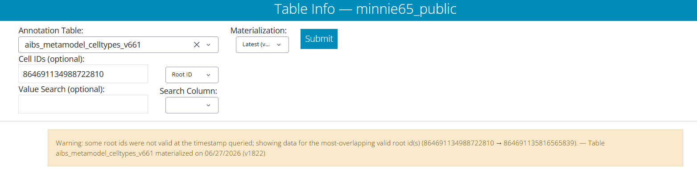

Troubleshooting FAQ
Common issues and questions when working with the Neuroglancer scenes and Dash Apps. Click a question to expand it. If something is not covered here, contact your instructor or TA, or report an issue.
Use Google Chrome or Mozilla Firefox. Avoid Safari — it sometimes fails to render the Neuroglancer scene, or will not let you copy Root IDs into or out of the viewer. If a scene or Dash App is misbehaving, switching to Chrome or Firefox is the first thing to try.
When you open a Neuroglancer scene or a Dash App you may be prompted to log in. Click “Request Login” and sign in with any Google account. To activate your access you must also accept the MICrONS Terms of Service, which you only need to do once per account:
Accept the TOS here: https://global.daf-apis.com/sticky_auth/api/v1/tos/2/accept
If neurons or meshes do not appear in a scene, follow these steps:
- Accept the Terms of Service on your Google-authorized account: https://global.daf-apis.com/sticky_auth/api/v1/tos/2/accept
- Hard-refresh your Neuroglancer window.
- If the right-hand segmentation panel still shows a red error message, contact your instructor or TA.
If only a specific neuron fails to render, see A Root ID does not appear below, and confirm you are using a recommended browser.
The MICrONS dataset is continuously proofread, so the reconstruction changes over time. To keep results reproducible, the data is periodically frozen into numbered snapshots called materialization versions. Each version fixes the segmentation, the Root IDs, and the annotation tables at a single moment in time.
These modules use version v1300 so that every student sees the same cells and the same Root IDs. Newer versions — including the “Latest” option in the Dash Apps — contain more proofreading, but their Root IDs differ from v1300.
The dataset has two kinds of segmentation layer:
- Static (flat) layer — a frozen segmentation for a single version. The module Neuroglancer scenes use the v1300 static layer. It loads quickly, never changes, and its Root IDs match v1300. This is what the module links use.
- Dynamic (Graphene) layer — the live, editable segmentation that reflects the most recent proofreading. Its Root IDs can change as cells are merged or split. Neuroglancer links generated from the Dash Apps use the Graphene layer, so they show the latest data, not v1300.
Because of this, a Root ID copied from a v1300 scene can differ from the “same” cell’s Root ID in a Graphene / latest scene. The Dash Apps handle this substitution automatically — see the yellow warning.
Every neuron has a unique Root ID, but proofreading edits create new Root IDs over time, so a Root ID that is valid in one version may not be valid in another. In a Neuroglancer scene this can show up as a neuron with no mesh, or a cell with no synapses. If that happens:
- Try a different Root ID, or
- Make sure the version you are viewing matches the version the Root ID came from.
This mismatch is a normal consequence of the dataset being updated; it does not mean you did anything wrong.
When you enter a Root ID in a Dash App (the Table Viewer or the Connectivity Viewer) that is not valid at the selected Materialization version, the app automatically looks up the most-overlapping valid Root ID and shows that cell’s data, along with a yellow warning banner. This warning is expected and intended — it tells you the app substituted the correct Root ID for the version you queried, so you do not need to do anything about it.

The Materialization dropdown defaults to “Latest.” If you want your Dash App results to match the cells shown in the module scenes, select v1300.